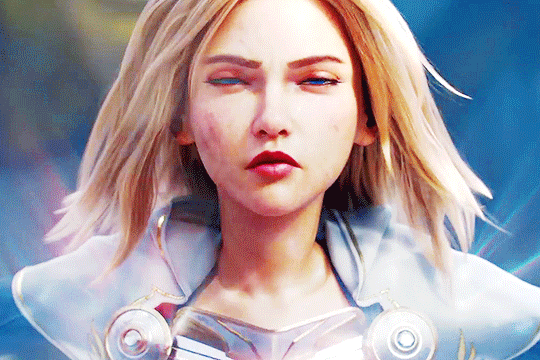

Luxanna Crownguard (The lady of Luminosity)
Lux is a character from the videogame "League of Legends". I started
playing this game about more than a year ago and I main her. She's one
of the first champions that I learned to play and I enjoy playing to
this day. I would say that this game in particular has made a huge
impact in my life for the past year, It gave me something to distract
myself a bit in these difficult times. Playing Lux made me happy during
the days that I am down, so I dedicate this to her and this game.